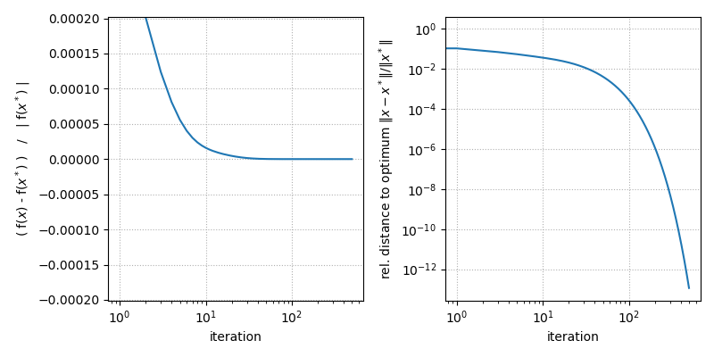

Note
Go to the end to download the full example code.
Basic MLEM
This example demonstrates the use of the MLEM algorithm to minimize the negative Poisson log-likelihood function.
subject to
using the linear forward model
Tip
parallelproj is python array API compatible meaning it supports different
array backends (e.g. numpy, cupy, torch, …) and devices (CPU or GPU).
Choose your preferred array API xp and device dev below.
30 import array_api_compat.numpy as xp
31
32 # import array_api_compat.cupy as xp
33 # import array_api_compat.torch as xp
34
35 import parallelproj
36 from array_api_compat import to_device
37 import array_api_compat.numpy as np
38 import matplotlib.pyplot as plt
39
40 # choose a device (CPU or CUDA GPU)
41 if "numpy" in xp.__name__:
42 # using numpy, device must be cpu
43 dev = "cpu"
44 elif "cupy" in xp.__name__:
45 # using cupy, only cuda devices are possible
46 dev = xp.cuda.Device(0)
47 elif "torch" in xp.__name__:
48 # using torch valid choices are 'cpu' or 'cuda'
49 dev = "cuda"
Setup of the forward model \(\bar{y}(x) = A x + s\)
We setup a minimal linear forward operator \(A\) respresented by a 4x4 matrix and an arbritrary contamination vector \(s\) of length 4.
Note
The OSEM implementation below works with all linear operators that
subclass LinearOperator (e.g. the high-level projectors).
63 # setup an arbitrary 4x4 matrix
64 mat = xp.asarray(
65 [
66 [2.5, 1.2, 0.3, 0.1],
67 [0.4, 3.1, 0.7, 0.2],
68 [0.1, 0.3, 4.1, 2.5],
69 [0.2, 0.5, 0.2, 0.9],
70 ],
71 dtype=xp.float64,
72 device=dev,
73 )
74
75 op_A = parallelproj.MatrixOperator(mat)
76 # setup an arbitrary contamination vector that has shape op_A.out_shape
77 contamination = xp.asarray([0.3, 0.2, 0.1, 0.4], dtype=xp.float64, device=dev)
Setup of ground truth and data simulation
We setup an arbitrary ground truth \(x_{true}\) and simulate noise-free and noisy data \(y\) by adding Poisson noise.
86 # ground truth
87 x_true = xp.asarray([5.5, 10.7, 8.2, 7.9], dtype=xp.float64, device=dev)
88
89 # simulated noise-free data
90 noise_free_data = op_A(x_true) + contamination
91
92 # add Poisson noise
93 np.random.seed(1)
94 y = xp.asarray(
95 np.random.poisson(parallelproj.to_numpy_array(noise_free_data)),
96 device=dev,
97 dtype=xp.float64,
98 )
Analytic calculation of the optimal point (as reference)
Since our linear forward operator \(A\) is small and invertible (which is usually not the case in practice), we can calculate the optimal point \(x^* = A^{-1} (y - s)\) and the corresponding optimal value of \(f(x^*)\).
109 # calculate the reference solution by inverting A
110 mat_inv = xp.linalg.inv(mat)
111 x_ref = mat_inv @ (y - contamination)
112
113 # also calculate the cost of the reference solution
114 exp_ref = op_A(x_ref) + contamination
115 cost_ref = float(xp.sum(exp_ref - y * xp.log(exp_ref)))
MLEM iterations to minimize \(f(x)\)
We apply multiple MLEM updates [DLR77] [SV82] [LC84]
to calculate the minimizer of \(f(x)\) iteratively.
To monitor the convergence we calculate the relative cost
and the distance to the optimal point
138 # number MLEM iterations
139 num_iter = 500
140
141 # initialize x
142 x = xp.ones(op_A.in_shape, dtype=xp.float64, device=dev)
143 # calculate A^H 1
144 adjoint_ones = op_A.adjoint(xp.ones(op_A.out_shape, dtype=xp.float64, device=dev))
145
146 # allocate arrays for the relative cost and the relative distance to the
147 # optimal point
148 rel_cost = xp.zeros(num_iter, dtype=xp.float64, device=dev)
149 rel_dist = xp.zeros(num_iter, dtype=xp.float64, device=dev)
150
151 for i in range(num_iter):
152 # evaluate the forward model
153 exp = op_A(x) + contamination
154 # calculate the relative cost and distance to the optimal point
155 rel_cost[i] = (xp.sum(exp - y * xp.log(exp)) - cost_ref) / abs(cost_ref)
156 rel_dist[i] = xp.linalg.vector_norm(x - x_ref) / xp.linalg.vector_norm(x_ref)
157 # MLEM update
158 ratio = y / exp
159 x *= op_A.adjoint(ratio) / adjoint_ones
Convergences plots
166 fig, ax = plt.subplots(1, 2, figsize=(8, 4), sharex=True)
167 ax[0].semilogx(parallelproj.to_numpy_array(rel_cost))
168 ax[1].loglog(parallelproj.to_numpy_array(rel_dist))
169 ax[0].set_ylim(-rel_cost[2], rel_cost[2])
170 ax[0].set_ylabel(r"( f($x$) - f($x^*$) ) / | f($x^*$) |")
171 ax[1].set_ylabel(r"rel. distance to optimum $\|x - x^*\| / \|x^*\|$")
172 ax[0].set_xlabel("iteration")
173 ax[1].set_xlabel("iteration")
174 ax[0].grid(ls=":")
175 ax[1].grid(ls=":")
176 fig.tight_layout()
177 fig.show()

Total running time of the script: (0 minutes 0.335 seconds)
Related examples


DePierro’s algorithm to optimize the Poisson logL with quadratic intensity prior